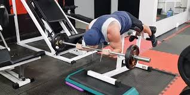

Welcome to Ejercicios efectivos de bíceps
Bíceps grandes: 7 ejercicios básicos para tener unos brazos poderosos - AS.com
2021.06.26 19:47As.com Cerrar Conéctate Regístrate Temas de la semana Dietas Salud Ejercicio físico Cuidado corporal Nutrición Deportes Fitness Enfermedades Entrenamientos Calendario fitness diciembre Messi Psicólogo 12 uvas Recetas sanas Navidad Remedios resaca Calendario fitness enero Amazon Prime Day Más temas
Deporte y Vida
Síguenos en As.com Deporte Y Vida Salud Nutrición Fitness Psicología Menú MásEJERCICIO FÍSICO
Bíceps grandes: 7 ejercicios básicos para tener unos brazos poderosos
Construir masa muscular es un proceso más lento que quemar grasa corporal, pero teniendo en cuenta una serie de factores y haciendo los ejercicios adecuados, el entrenamiento de hipertrofia será un éxito.
Álvaro Piqueras @alvaro_piqueras Actualizado a: 3 de diciembre de 2020 08:37 CET as.comCuando nos planteamos el desarrollo de los grupos musculares del brazo , lo habitual es que sea el bíceps el primero que capte nuestra atención, aunque no es menos cierto que tanto el tríceps como los músculos del antebrazo no deberían pasar desapercibidos si lo que pretendemos es un resultado estético y equilibrado.
En cualquier caso, el bíceps braquial , ubicado en la parte superior del brazo y antagónico del tríceps, está formado por dos cabezas, cabeza corta y cabeza larga, que convergen en una sola masa. Es uno de los tres músculos del compartimiento anterior del brazo, que completan el músculo braquial y el músculo coracobraquial.
Su función es determinante para la flexión del codo, para el movimiento supinador del antebrazo, es decir, rotatorio, y para la flexión del hombro. No obstante, es habitual cometer una serie de fallos que minimizan la eficacia de los ejercicios que se centran en la zona, ya sea si se utilizan mancuernas o barra en cualquiera de sus variedades.
6 errores habituales al trabajar el bíceps
Mueves el codo, levantas los hombros o flexionas la muñecas. No completas el rango de movimiento (ROM). Te limitas a levantar peso mecánicamente sin concentrarte. No trabajas por igual la cabeza corta y la larga del bíceps. Te olvidas de la importancia del músculo braquial. Realizas demasiado volumen de trabajo.Ya conocemos la anatomía del músculo, su función y posibles errores a la hora de trabajar la zona. Ahora vamos a entrenar. Para ello, compartimos una rutina completa cortesía de Rubén García , experto en fitness y entrenador personal, que además de varios ejercicios de biceps, tiene en cuenta también la musculatura del antebrazo.
Rutina de bíceps
Curl martillo Curl araña de pie Curl a una mano de pie Curl con Z cerrado Curl a una mano Curlz Z prono Flexión de muñecas para antebrazoCómo hacer la rutina
Uno o dos días a la semana 8-10 repeticiones cada ejercicio x3 series Ver esta publicación en InstagramUna publicación compartida de RUBÉN GARCÍA | El gym & el ñam (@rvbengarcia)
Por último, hay que tener en cuenta que construir masa muscular es un proceso más lento que quemar grasa corporal para adelagazar por ejemplo. El crecimiento de la masa muscular es paulatino y es necesario ser constante. Además, el entrenamiento de hipertrofia tiene muchos matices ya que en la ecuación intervienen aspectos como la experiencia previa, la dieta, el descanso, el volumen total entrenamiento (cantidad), el tiempo bajo tensión y esfuerzo mecánico, y la intensidad de los ejercicios .
6 ejercicios eficaces para esculpir los abdominales y tener el core como una roca
Calendario fitness de diciembre: en forma en poco tiempo
Etiquetado en: Fitness Hábitos salud Obesidad Ejercicio físico Entrenamientos Dietas Tratamiento médico Enfermedades endocrinas Nutrición Medicina preventiva Cuidado corporal Enfermedades Deportes Medicina Bienestar Estilo vida Salud Más0 Comentarios
Normas MostrarPara poder comentar debes estar registrado y haber iniciado sesión. ¿Olvidaste la contraseña?
Conéctate RegístrateTe recomendamos en Deporte y Vida
DEPORTE Y SALUD La lesión de Varane que le impedirá jugar la semifinal contra el Chelsea SALUD Y DEPORTE Rope Training: ¿en qué consiste y cuáles son sus beneficios? SALUD Espididol: ¿cómo actúa y en qué consisten sus beneficios? DEPORTE Y SALUD ¿Qué síntomas puede causar el citomegalovirus que contrajo Álvaro Morata? SALUD Ricola Multi-Active: sensación de libertad al respirar en forma de caramelo DEPORTE Y SALUD Las lesiones repetitivas en el deporte: el caso de HazardDeporte y Vida top
1SALUD
Las 8 señales que te avisan de un ataque al corazón un mes antes
2CUERPO A CUERPO
Cinco objetos domésticos que te harán disfrutar sin pisar un sex-shop
3NUTRICIÓN
Retención de líquidos: cómo detectarla y combatirla a nivel nutricional
Más noticiasNutrición deportiva
Estas barritas hiperproteicas suman más de 12.000 valoraciones en Amazon
Gadgets
Nueva Xiaomi Mi Band 6 : mejor pantalla y registro de la calidad de respiración
CARGANDO MÁS NOTICIAS